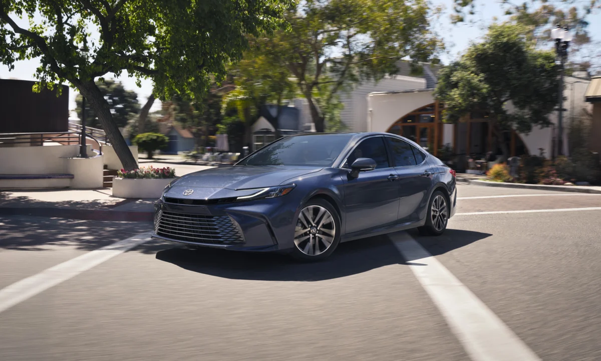
▲ 토요타가 2027 캠리 보도자료에 쓴 대표 사진. 등급은 별도로 표기되지 않았다 ⓒ Toyota Motor North America 보도자료 사진(pressroom.toyota.com)
"캠리는 6백 달러, 알티마는 2백 달러 올랐다는데, 그래서 미국 중형 세단은 지금 얼마에 살 수 있나?" 2027년형 토요타 캠리와 닛산 알티마 가격표가 같은 주(10월 13~14일)에 나왔는데, 두 회사의 인상 폭과 파는 방식이 꽤 다르다. 이 글은 두 제조사의 공식 가격표를 2026년형과 한 줄씩 맞대어 트림별 MSRP, 목적지 요금까지 더한 실제 청구액, 연비, 달라진 점을 정리하고, 마지막에 한국에서 살 수 있는 쪽과 없는 쪽을 가른다.
미국 가격은 달러로만 적고 원화로 바꾸지 않았다. 한국 가격은 토요타코리아 공식 페이지의 원화 값만 쓴다. 두 나라의 판매 조건과 세금 구조가 달라서 환산 비교는 의미가 없기 때문이다.
1. 2026년형에서 2027년형으로, 가격표에서 달라진 것
두 차의 변화는 거의 가격 하나로 정리된다. 토요타 보도자료는 2027 캠리의 등급·사양·옵션이 이월된다고 소개하고 새 기능을 따로 적지 않았고, 닛산 알티마 프레스킷의 변경 설명도 "등급 구성 정리(SV FWD, SR FWD, SR AWD)" 한 줄뿐이다.
가격 변화를 한 장에 모으면 아래 도표와 같다. 막대의 시작점을 24,000달러로 잡았기 때문에 길이 비율이 아니라 숫자 자체를 읽어야 한다.
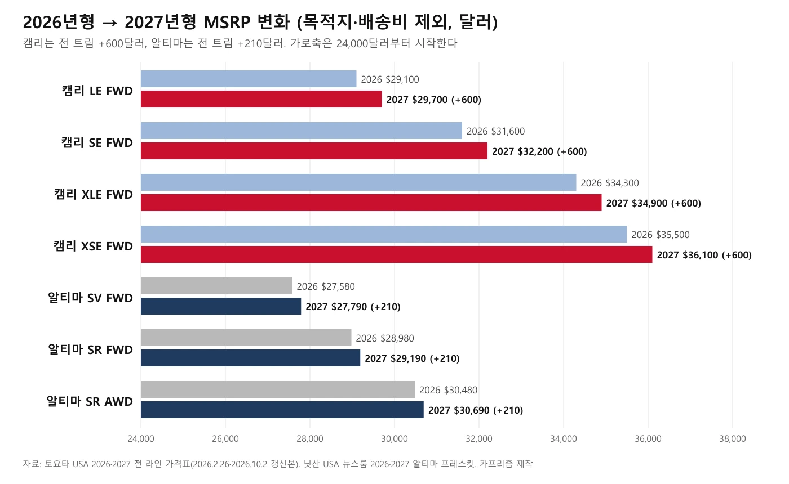
▲ 캠리 FWD 4개 트림은 모두 +600달러, 알티마 3개 구성은 모두 +210달러다. 카프리즘 제작(토요타·닛산 공식 가격표 기반)
| 구분 | 2026년형 입문 | 2027년형 입문 | MSRP 인상 | 목적지 요금 변화 | 청구액 인상 |
|---|---|---|---|---|---|
| 캠리 LE FWD | 29,100 | 29,700 | +600 (약 2.1%) | 1,195 → 1,295 | +700 |
| 알티마 SV FWD | 27,580 | 27,790 | +210 (약 0.8%) | 1,275 → 1,275 | +210 |
캠리의 청구액 인상이 700달러라는 점이 중요하다. 일부 보도가 "전 트림 700달러 인상"이라고 쓴 것은 MSRP 인상 600달러에 목적지 요금 인상 100달러를 합친 값으로 보이며(카프리즘 추정), 토요타가 가격표에서 밝힌 MSRP 인상은 600달러다. 다른 보도에는 "100달러 인상"이라는 수치도 있었는데 공식 가격표와 맞지 않았다.
목적지 요금에는 단서가 하나 있다. 토요타 가격표는 목적지·처리·취급비(DPH)를 "모델 연도와 관계없이 2026년 1월 1일 이후 처리되는 모든 차량"에 적용한다고 적는다. 2026년 2월 갱신본의 승용차 요금은 1,195달러, 2027년형을 담은 10월 2일 갱신본은 1,295달러다. 즉 100달러는 2027년형만의 인상이라기보다 가격표를 갱신하면서 오른 값이어서, 2026년형 구매자에게 지금 얼마가 청구되는지는 이 글에서 확인하지 못했다.
가격표 원문은 토요타 뉴스룸과 닛산 뉴스룸에서 받을 수 있다. 토요타 가격표 바로가기 닛산 알티마 프레스킷 바로가기
2. 2027 캠리 — 5개 트림 전부 +600달러, 전부 하이브리드
2027 캠리는 LE·SE·나이트셰이드 에디션·XLE·XSE 다섯 등급이고, 모두 2.5L 4기통 하이브리드다(5세대 토요타 하이브리드 시스템, eCVT). 시스템 출력은 전륜구동 225마력, 사륜구동 232마력이며 사륜구동은 뒷차축 전기모터를 쓰는 전자식 온디맨드 방식으로 모든 등급에서 고를 수 있다.
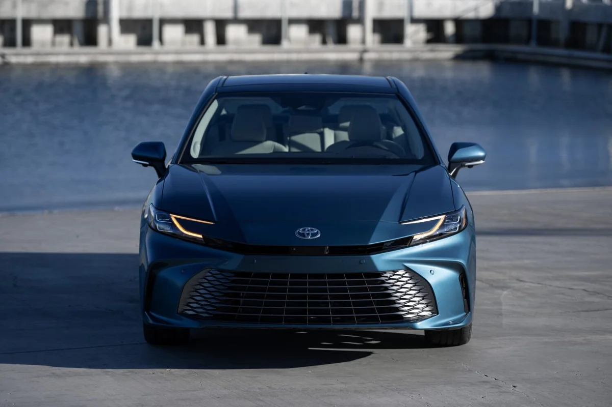
▲ 2027 캠리 XLE AWD(오션 젬 색, 토요타 사진 파일명 기준). XLE는 18인치 블랙·머신 마감 알로이 휠과 12.3인치 디지털 계기판이 들어간다. ⓒ Toyota Motor North America 보도자료 사진(pressroom.toyota.com)
| 트림 | 2026 FWD | 2027 FWD | 2026 AWD | 2027 AWD | 인상폭 |
|---|---|---|---|---|---|
| LE | 29,100 | 29,700 | 30,625 | 31,225 | +600 |
| SE | 31,600 | 32,200 | 33,125 | 33,725 | +600 |
| 나이트셰이드 에디션 | 32,600 | 33,200 | 34,125 | 34,725 | +600 |
| XLE | 34,300 | 34,900 | 35,825 | 36,425 | +600 |
| XSE | 35,500 | 36,100 | 37,025 | 37,625 | +600 |
AWD 옵션 가격은 2026년형과 같은 1,525달러다. 가격표에서 이 구조는 단순하다. 전륜구동 가격을 600달러 올렸고 AWD 추가금은 그대로 두었다.
▲ 2027 캠리 나이트셰이드 에디션(파일명 기준). 토요타는 이 등급을 19인치 전용 휠과 미드나이트 블랙 메탈릭 포인트, 소프텍스 시트를 쓰는 등급으로 소개했다. ⓒ Toyota Motor North America 보도자료 사진(pressroom.toyota.com)
| 등급 | 휠 | 주요 구성 | 복합연비(제조사 추정) |
|---|---|---|---|
| LE | 16인치 알로이 | 직물 시트, 7인치 디지털 계기판 | FWD 51mpg / AWD 50mpg |
| SE | 18인치 블랙 알로이 | 스포츠 튜닝 서스펜션, 소프텍스 시트, 패들 시프트 | FWD 46mpg / AWD 46mpg |
| 나이트셰이드 | 19인치 | 스포츠 튜닝 서스펜션, 블랙 포인트, 소프텍스 시트 | FWD 46mpg / AWD 46mpg |
| XLE | 18인치 알로이 | 가죽·디나미카(마이크로파이버) 시트, 앞좌석 열선(통풍은 패키지 옵션), 12.3인치 계기판 | FWD 46mpg / AWD 46mpg |
| XSE | 19인치 | 스포츠 튜닝 서스펜션, 가죽 시트, 12.3인치 계기판 | FWD 46mpg / AWD 43mpg |
이 표의 연비는 토요타 2027 캠리 제품 정보 PDF의 "제조사 추정 연비(도심/고속/복합)"를 옮긴 것이다. 등급별 대응은 PDF에 명시돼 있다. LE FWD 52/49/51, LE AWD 50/49/50, SE·나이트셰이드·XLE·XSE FWD 47/45/46, SE·나이트셰이드·XLE AWD 46/46/46, XSE AWD 43/43/43이다. 같은 등급이어도 휠이 큰 XSE AWD(19인치)가 가장 낮다.
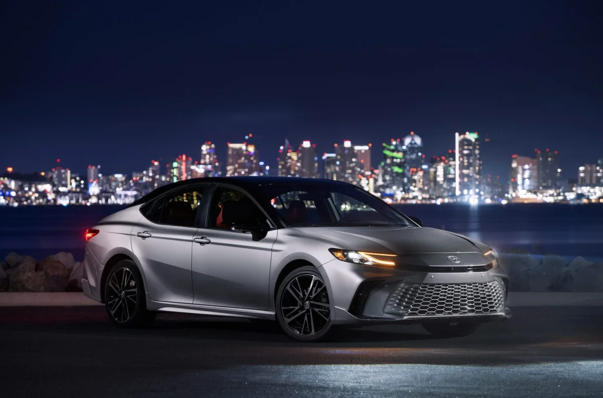
▲ 2027 캠리 XSE AWD(헤비 메탈 블랙 루프 조합, 파일명 기준). XSE는 19인치 휠과 스포츠 튜닝 서스펜션을 쓰며, 위 표에서 복합 43mpg로 가장 낮다. ⓒ Toyota Motor North America 보도자료 사진(pressroom.toyota.com)
토요타 보도자료와 제품 정보 PDF에서 확인되는 공통 사항도 있다. 토요타 세이프티 센스 3.0이 전 등급 기본이고, 8인치 터치스크린과 무선 애플 카플레이·안드로이드 오토가 기본이다. XLE·XSE는 파노라마 글라스 루프를 옵션으로 고를 수 있고, 9스피커 JBL 오디오·통풍 시트·10인치 헤드업 디스플레이·교통 정체 보조·파노라마 뷰 모니터 등을 묶은 프리미엄 플러스 패키지도 선택할 수 있다. 하이브리드 부품 보증은 8년 10만 마일, 하이브리드 배터리는 10년 15만 마일이고 기본 보증은 3년 3만 6,000마일이다.
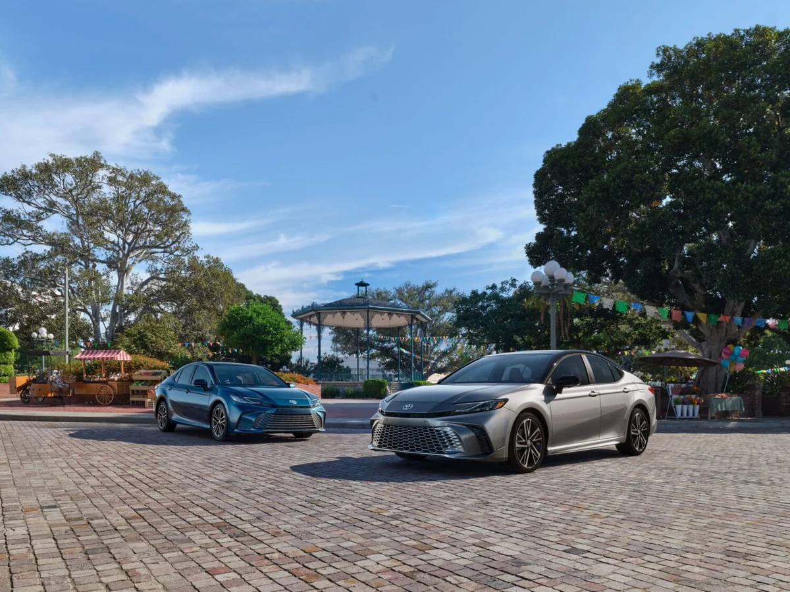
▲ 토요타 2027 캠리 보도자료의 단체 사진. 두 대의 등급은 표기되지 않았다. ⓒ Toyota Motor North America 보도자료 사진(pressroom.toyota.com)
3. 2027 알티마 — 세 구성 +210달러, SV AWD는 사라졌다
알티마는 2.5L 직분사 4기통(전륜 188마력·토크 180lb-ft, 사륜 182마력·178lb-ft)에 Xtronic CVT를 얹는, 하이브리드 없는 구성이다. 2026년형은 SV·SR 두 등급에 FWD·AWD를 모두 팔았지만, 2027년형은 AWD가 SR에만 남았다.
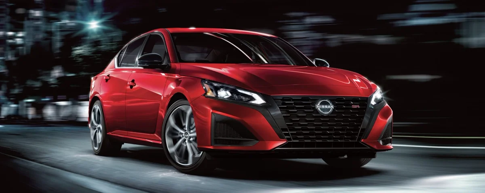
▲ 닛산 USA 뉴스룸의 2027 알티마 프레스킷 대표 사진. 사진 속 연식·등급은 닛산이 표기하지 않았다. ⓒ Nissan North America 뉴스룸 사진(usa.nissannews.com)
| 구성 | 2026년형 | 2027년형 | 인상폭 | 목적지 포함 2027 | 복합연비(EPA) |
|---|---|---|---|---|---|
| SV FWD | 27,580 | 27,790 | +210 | 29,065 | 30mpg(26/36) |
| SR FWD | 28,980 | 29,190 | +210 | 30,465 | 30mpg(26/36) |
| SV AWD | 29,080 | 판매 목록에서 빠짐 | - | - | 2026년형 28mpg(25/33) |
| SR AWD | 30,480 | 30,690 | +210 | 31,965 | 28mpg(25/33) |
목적지·취급 수수료는 2026년형과 2027년형 모두 1,275달러다. 프레스킷의 가격표는 세금·등록비·목적지 요금을 제외한 "제시 가격"으로 표기돼 있고 실제 판매가는 딜러가 정한다.
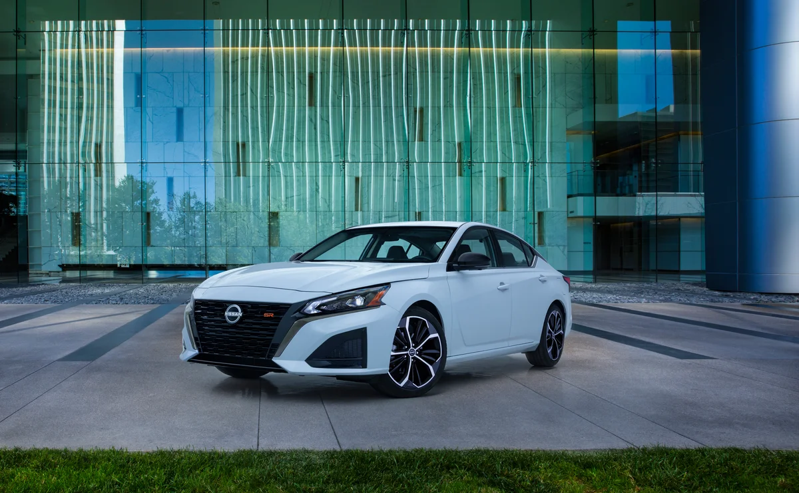
▲ 닛산 USA 뉴스룸에 올라온 알티마 사진. 연식은 표기되지 않았고, 검은 19인치 휠이라 SR 계열로 보인다(카프리즘 추정). ⓒ Nissan North America 뉴스룸 사진(usa.nissannews.com)
SR은 19인치 휠, 12.3인치 터치스크린, 패들 시프트가 들어가는 스포티 등급으로 소개돼 있다. 즉 알티마에서 AWD를 사려면 SR로 올라가야 한다. 이 구조는 뒤에서 캠리와 AWD 입문가를 비교할 때 숫자로 나타난다.
SV는 17인치 휠과 7인치 디스플레이, 유선 애플 카플레이·안드로이드 오토가 기본이다. 닛산은 SV에 3,000달러짜리 프리미엄 패키지(19인치 휠, 12.3인치 화면, 무선 카플레이, 가죽 시트, 열선 시트, 문루프, 프로파일럿 어시스트 등)와 1,300달러짜리 스페셜 에디션 패키지를 얹을 수 있게 했다. 프로파일럿 어시스트는 SV 프리미엄 패키지에만 있고 SR에는 선택지가 없다. 2026년형에 있던 SR 미드나이트 에디션(2,000달러 패키지)은 2027년형 프레스킷에서 찾지 못했다.
4. 같은 청구서로 놓고 보면 — 격차가 더 벌어졌다
MSRP는 목적지 요금이 빠진 값이라 비교할 때는 목적지 요금을 더하는 편이 실제 지출에 가깝다. 토요타는 승용차 목적지 요금이 1,295달러, 닛산은 1,275달러다. 세금·등록비·딜러 부대비용은 지역마다 달라 넣지 않았다.
| 구성 | 캠리 2027 | 알티마 2027 | 격차 | 2026년형 격차 |
|---|---|---|---|---|
| 입문 FWD (캠리 LE vs 알티마 SV) | 30,995 | 29,065 | 1,930 | 1,440 (30,295 vs 28,855) |
| 스포츠 FWD (캠리 SE vs 알티마 SR) | 33,495 | 30,465 | 3,030 | 2,540 (32,795 vs 30,255) |
| AWD 입문 (캠리 LE AWD vs 알티마 SR AWD) | 32,520 | 31,965 | 555 | 65 (31,820 vs 31,755) |
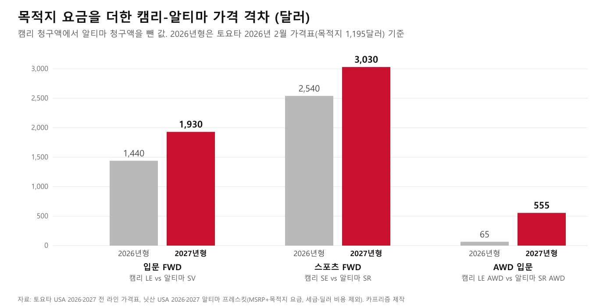
▲ 입문 FWD 1,440→1,930달러, 스포츠 FWD 2,540→3,030달러, AWD 입문 65→555달러. 카프리즘 제작(토요타·닛산 공식 가격표 기반)
2026년형 캠리 값은 2026년 2월 가격표(목적지 1,195달러)를 기준으로 계산했다. 2026년형에도 10월 요금 1,295달러를 적용하면 격차는 입문 FWD 1,540달러, 스포츠 FWD 2,640달러, AWD 입문 165달러로 계산된다. 어느 쪽이든 격차가 벌어졌다는 방향은 같다. 가장 눈에 띄는 것은 AWD 입문 구간으로, 캠리 LE AWD와 알티마 SR AWD의 격차가 65달러에서 555달러로 벌어졌다. 단 알티마 SR은 스포츠 장비가 들어간 등급이고 캠리 LE는 입문 등급이라 같은 급의 장비 비교는 아니다.
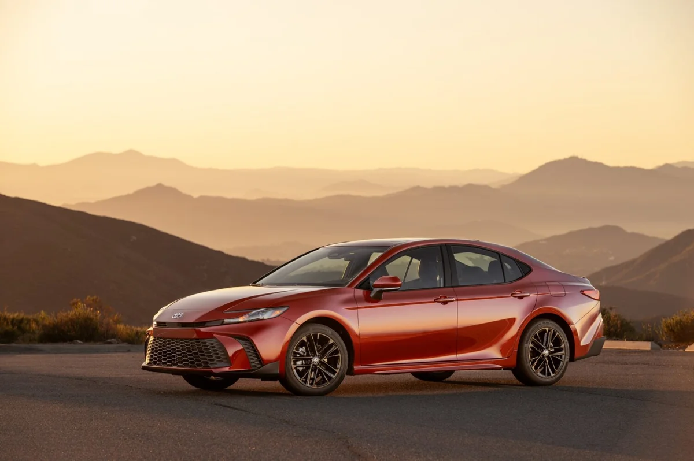
▲ 2027 캠리 SE AWD(수퍼소닉 레드, 파일명 기준). 토요타 사진. ⓒ Toyota Motor North America 보도자료 사진(pressroom.toyota.com)
인상률로 보면 캠리 LE는 MSRP 약 2.1%, 청구액 약 2.3% 올랐고, 알티마 SV는 MSRP 약 0.8%, 청구액 약 0.7% 올랐다. 캠리가 더 많이 올렸지만 캠리의 판매 규모는 이미 알티마와 비교가 안 된다. 카프리즘 기존 기사가 토요타 공식 자료로 확인한 2026년 9월 캠리 미국 판매는 25,350대다(미국 세단 판매 기사). 알티마는 같은 기사에서 닛산 공식 판매 자료를 확인하지 못했다.
5. 파워트레인과 연비 — 가격 격차가 연료에서 얼마나 줄어드나
두 차의 가장 큰 차이는 파워트레인이다. 캠리는 전 트림 하이브리드이고, 알티마는 내연기관 2.5L 4기통 하나다. 같은 주행거리라도 연료 소비량이 다르다.
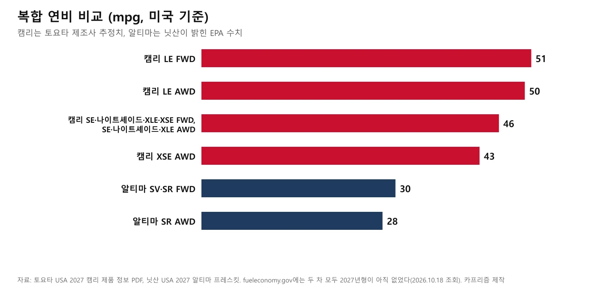
▲ 복합 연비 비교. 캠리 수치는 토요타 제조사 추정치, 알티마 수치는 닛산 발표 EPA 수치다. 카프리즘 제작(토요타·닛산 공식 자료 기반)
| 항목 | 2027 캠리 | 2027 알티마 |
|---|---|---|
| 엔진 | 2.5L 4기통 하이브리드(THS 5), eCVT | 2.5L 직분사 4기통, Xtronic CVT |
| 출력 | 시스템 225마력(FWD)·232마력(AWD) | 188마력(FWD)·182마력(AWD) |
| 복합 연비 | LE FWD 51 / LE AWD 50 / 그 외 구성 46(XSE AWD만 43)mpg(토요타 추정) | FWD 30 / AWD 28mpg(닛산 발표 EPA) |
| 연료 | 87옥탄 이상 무연 | 일반 무연 |
| 연 15,000마일 연료 소비량(카프리즘 계산) | LE FWD 약 294갤런, 46mpg 구성 약 326갤런 | FWD 500갤런, AWD 약 536갤런 |
| 트렁크 | 15.1입방피트(토요타 PDF) | 15.4입방피트(닛산 USA 프레스킷) |
| 휠베이스·전장 | 111.2인치·193.5인치 | 111.2인치·192.9인치 |
연료비는 갤런당 가격 가정에 따라 달라지므로 금액으로 환산하지 않고 소비량만 적었다. 연 15,000마일을 달린다는 가정에서 LE FWD와 알티마 FWD의 소비량 차이는 약 206갤런이다.
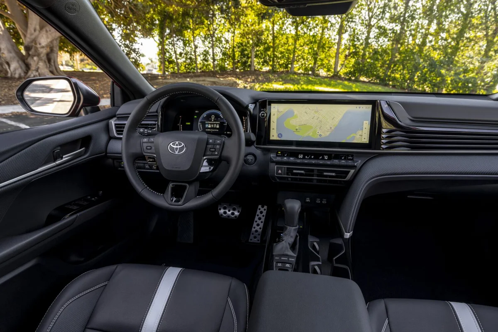
▲ 2027 캠리 SE 실내(블랙 인테리어, 파일명 기준). SE는 소프텍스·직물 시트에 패들 시프트가 기본이다. ⓒ Toyota Motor North America 보도자료 사진(pressroom.toyota.com)
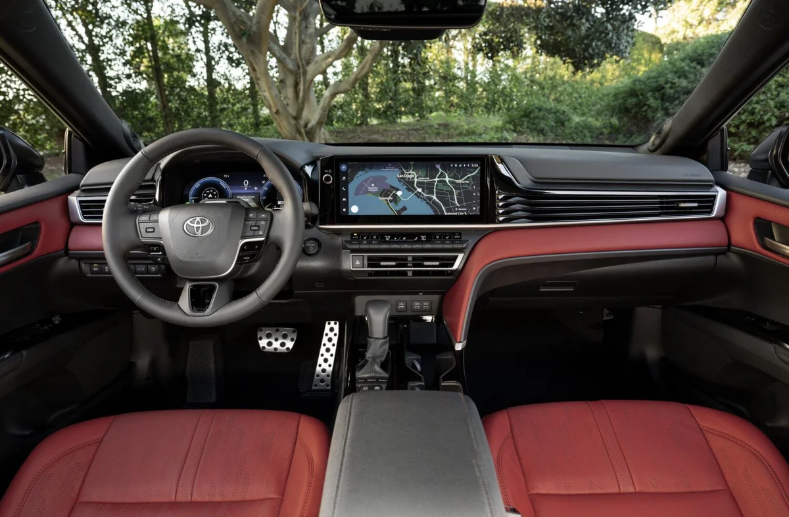
▲ 2027 캠리 XSE 실내(코크핏 레드, 파일명 기준). 토요타 사진. ⓒ Toyota Motor North America 보도자료 사진(pressroom.toyota.com)
다만 캠리의 연비 수치는 토요타 제품 정보 PDF의 "제조사 추정치"이고, 알티마는 닛산 프레스킷에 EPA 수치로 적혀 있다. 두 차 모두 fueleconomy.gov에서 2027년형 항목이 조회되지 않았다(2026년 10월 18일). 공식 EPA 라벨이 올라오면 숫자가 조금 달라질 수 있다. fueleconomy.gov 바로가기
6. "살아남았다"는 말은 어디까지 사실인가
알티마에는 단종설이 붙어 있다. 오토가이드는 이번 2027년형 가격 기사에서 "마지막 알티마"라는 표현을 썼고, 일부 매체는 2027년형이 마지막 해라고 보도했다. 반면 닛산은 7월 카앤드라이버에 "알티마는 라인업의 중요한 부분으로 남아 있고, 올해 말 2027년형을 내놓겠다"는 취지로 밝혔다(TFLcar 2026년 7월 15일 기사가 인용). 같은 기사에 따르면 닛산 제품·기획 책임자의 "곧 끝에 이른다"는 취지의 발언이 단종설의 계기가 됐다.
단종 보도를 낸 The Drive·WardsAuto 원문은 이 글에서 확인하지 못했다. 판매 부진은 사실로 보인다. TFLcar는 알티마 판매가 전년 대비 32% 줄었다고 전했다(기준 기간은 기사에 명시되지 않았다).
닛산 뉴스룸의 2027 알티마 프레스킷에는 마지막 해라는 문구가 없다. 따라서 "2027년형이 마지막"이라는 표현은 공식 확인이 안 된 보도로 취급하고, 확인된 사실은 "2027년형이 가격표와 함께 정식으로 나왔다"까지다.
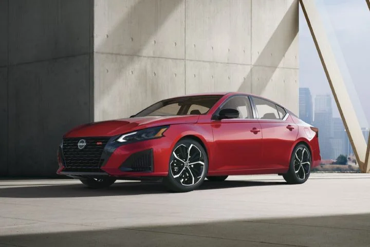
▲ 닛산 뉴스룸의 알티마 사진(해상도가 낮아 원본 크기로 실었다). 연식·등급은 표기되지 않았다. ⓒ Nissan North America 뉴스룸 사진(usa.nissannews.com)
이번 가격표에서 읽히는 닛산의 선택은 두 가지다. 인상폭을 210달러로 눌렀고, SV AWD를 정리해 SR에 사륜구동을 몰았다. 이 해석은 카프리즘의 추정이며 닛산이 이유를 밝힌 것은 아니다.
같은 세단 시장의 다른 가격 사례는 기아 K5 미국 가격 기사와, 역시 토요타가 올린 2027 코롤라 크로스 가격 인상 기사에서 볼 수 있다. 캠리 하이브리드 단일 구성의 배경은 캠리 하이브리드 전용 기사에서 다뤘다.
7. 한국에서 살 수 있는 것, 없는 것
한국에서는 캠리는 살 수 있고 알티마는 살 수 없다. 토요타코리아 공식 페이지에는 캠리 하이브리드가 XLE 4,843만 원, XLE 프리미엄 5,403만 원(둘 다 VAT 포함)으로 올라 있다. 구동은 전륜구동, 시스템 총출력 227PS, 복합연비는 17.1km/L(도심 17.5, 고속 16.7)이고 연비 1등급으로 표시돼 있다(2026년 10월 18일 조회, 페이지에 가격 기준일은 따로 적혀 있지 않고 개별소비세·세제 혜택 반영 여부도 안내돼 있지 않다).
| 항목 | 한국(토요타코리아 공식 페이지) | 미국(토요타 USA) |
|---|---|---|
| 트림 | XLE, XLE 프리미엄(페이지에서 확인된 2개) | LE·SE·나이트셰이드·XLE·XSE 5개 |
| 구동 | 전륜구동(확인된 트림 기준) | FWD·AWD 선택 |
| 엔진 | 2.5L 하이브리드, 시스템 227PS | 2.5L 하이브리드, 시스템 225마력(FWD)·232마력(AWD) |
| 가격 | 4,843만 원, 5,403만 원(VAT 포함) | 29,700달러부터(MSRP, 목적지 1,295달러 별도) |
미국의 입문 LE·SE 구성은 한국 공식 페이지에서 확인되지 않는다. 두 나라가 시스템 출력을 서로 다른 단위(PS·hp)로 적고 있어 숫자가 조금 다르게 보일 뿐 같은 파워트레인 계열이다. 한국 가격은 원화, 미국 가격은 달러여서 직접 환산하지 않았다.
알티마는 사정이 다르다. 한국닛산은 2020년 5월 28일 보도자료로 그해 12월 말 한국 시장에서 닛산·인피니티 브랜드를 철수한다고 발표했다. 당시 보도에 따르면 기존 고객에게는 애프터세일즈 서비스와 부품 공급을 2028년까지 8년간 제공하기로 했다. 일본 불매운동 여파로 판매가 급감한 상황이었고, 닛산의 2020년 1~4월 국내 판매는 813대로 전년 동기 대비 41.3% 줄었다는 보도가 있었다. 이후 닛산이 한국에서 신차를 다시 공식 판매한다는 소식은 이 글에서 확인하지 못했다. 즉 "한국에 없는 알티마"를 사려면 공식 신차 판매망이 아닌 다른 경로를 거쳐야 하고, 그 경우 보증·부품·리콜 대응을 별도로 따져야 한다.
한국에서 비슷한 가격대 세단을 찾는다면 국산 중형 세단이 더 직접적인 비교 대상이다. 기존 기사 2027 쏘나타 디 엣지 가격 기사는 가솔린 2.0 프리미엄이 2,876만 원부터라고 정리했다. 5,000만 원 안팎 예산에서 캠리가 어디에 놓이는지는 5,000만 원 차 비교 기사에서 볼 수 있다. 토요타코리아 캠리 페이지 바로가기
8. 미국에서 살 때 확인할 순서
MSRP만 보고 판단하지 않으려면
- 1단계: 가격표의 "MSRP"는 목적지 요금·세금·등록비가 빠진 값이다. 캠리 1,295달러, 알티마 1,275달러를 더해 본다
- 2단계: 같은 급으로 비교한다. 캠리 LE는 입문 등급이고 알티마 SR은 스포츠 등급이다
- 3단계: AWD가 필요하면 알티마는 SR만 가능하고 캠리는 전 등급에서 1,525달러를 더한다
- 4단계: 연비는 EPA 라벨이 게시된 뒤 fueleconomy.gov에서 다시 확인한다
- 5단계: 딜러 부대비용과 지역 세금은 견적서로 확인한다
9. 이 글이 확인하지 못한 것
- 2026년형 캠리 가격의 기준 시점: 2026년형 값은 토요타 가격표 2026년 2월 26일 갱신본이다. 이후 가격이 바뀌었는지는 10월 2일 시트에 2026년형 행이 없어 확인하지 못했다
- 2026년형 알티마 가격의 기준 시점: 2025년 12월 15일 프레스킷 기준이다. 연중 조정 여부는 확인하지 못했다
- 2026년형 캠리의 현재 목적지 요금: 가격표 문구상 모델 연도와 관계없이 적용되는 요금이어서 2026년형도 1,295달러일 수 있으나, 딜러 청구서로 확인한 것은 아니다
- 캠리 연비의 EPA 확정치: 등급별 수치는 토요타 제품 정보 PDF로 확인했지만 제조사 추정치이고, fueleconomy.gov에는 아직 2027년형이 없다
- 알티마 SR 미드나이트 에디션: 2026년형 프레스킷에는 2,000달러 패키지로 있었으나 2027년형 프레스킷에서는 찾지 못했다. 폐지됐다고 단정하지는 않는다
- 알티마 단종 보도: The Drive·WardsAuto 원문과 카앤드라이버 원문은 확인하지 못했고 TFLcar가 인용한 내용만 참고했다
- 한국 캠리 가격의 세제 반영 여부: 토요타코리아 페이지에 개별소비세·세제 혜택 언급이 없고 가격 기준일도 없어 조회일(10월 18일)로만 적었다
- 한국닛산의 2019년 판매량: 공식 통계를 확인하지 못해 싣지 않았다
- 한국에서의 알티마 개별 수입: 이번에 확인하지 않았다
10. 요약
2027 캠리는 토요타 공식 가격표 기준 10개 구성 모두 MSRP가 2026년형보다 600달러 올랐고(LE 29,700달러부터, 목적지 1,295달러 별도), 2027 알티마는 SV FWD 27,790달러·SR FWD 29,190달러·SR AWD 30,690달러로 모두 210달러 올랐으며 SV AWD는 목록에서 빠졌다(목적지 1,275달러 별도).
목적지 요금까지 더하면 입문 구성의 격차는 1,440달러에서 1,930달러로 벌어졌고, 연비는 캠리 43~51mpg(제조사 추정), 알티마 28~30mpg다. 알티마 "마지막 해" 보도는 닛산 공식 자료에서 확인되지 않았다.
한국에서는 캠리 하이브리드 XLE 4,843만 원·XLE 프리미엄 5,403만 원(VAT 포함)을 살 수 있고, 알티마는 닛산의 한국 철수(2020년 발표)로 공식 신차 판매망이 없다.
📚 함께 읽으면 좋은 글